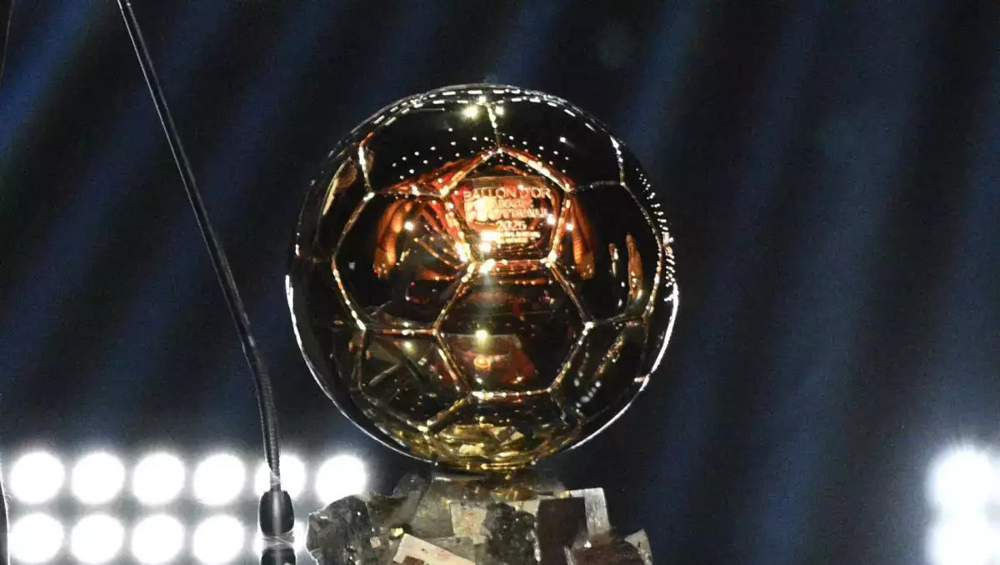

Эволюция премии: ювелирный секрет дома Mellerio и реформа 1995 года

Мало кто задумывается, что сам трофей «Золотой мяч» — это шедевр французского ювелирного искусства, который создается вручную старейшим ювелирным домом Mellerio dits Meller, основанным в Париже еще в 1613 году. Изготовление каждого экземпляра начинается за полгода до торжественной церемонии и требует более ста часов кропотливого труда чеканщиков, граверов и полировщиков. Основа кубка спаивается из двух латунных полусфер, которым мастер придает сферическую форму, после чего на поверхность наносится точная разметка швов классического футбольного мяча и слой чистого золота.
Готовая золотая сфера закрепляется на массивном постаменте из пирита — природного минерала с характерным металлическим блеском и кристаллической фактурой. Поскольку каждый кусок пирита в природе уникален, на планете не существует двух абсолютно одинаковых по форме подставки «Золотых мячей». Общий вес награды вместе с каменным основанием составляет около двенадцати килограммов, а имя победителя гравируется на специальной пластине только в последние часы перед началом парижского гала-вечера в театре Шатле, чтобы сохранить тайну голосования вплоть до вскрытия конверта на сцене.
Падение границ в 1995 году и объединение с ФИФА

Долгое время главным парадоксом «Золотого мяча» оставалось правило европейского гражданства. Из-за этого ограничения величайшие южноамериканские футболисты XX века — бразильцы Пеле, Гарринча и Зико, а также аргентинец Диего Марадона — юридически не могли претендовать на награду. Лишь в 1995 году редакция France Football провела историческую реформу, разрешив номинировать футболистов любого гражданства при условии, что они выступают за европейский клуб. В тот же год первым неевропейским лауреатом стал либерийский форвард «Милана» Джордж Веа, а спустя двенадцать лет, в 2007 году, были сняты вообще все географические ограничения.
Еще одной важной вехой стало изменение системы отбора с сезона 2021/22: если раньше жюри оценивало выступления игроков за календарный год (с января по декабрь), то теперь награда вручается строго по итогам футбольного сезона (с августа по июль). При этом в списке критериев на первое место официально поставлены индивидуальные действия и яркость игры футболиста в решающих матчах, на второе — командные титулы и трофеи, а на третье — класс игрока и соблюдение принципов честной игры Fair Play.